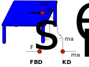

Central force motion#
When the forces acting on an object always act some center point, you can use the conservation of angular momentum to relate radius, \(r\), and angular velocity, \(\dot{\theta}\) as such
\(\sum M_O = \frac{d}{dt}\left[r\hat{e}_r \times m(\dot{r}\hat{e}_r + r\dot{\theta}\hat{e}_\theta)\right]\)
\(0 = \frac{d}{dt}\left[mr^2\dot{\theta}\right]\hat{k}\)
\(mr^2\dot{\theta} = constant\)
Consider the motion of ball on a frictionless table attached to a spring in Prob 4.13,

Kinematics in cylindrical coordinates#
It helps to see the motion to understand what’s going on, the position of the ball is
\(\mathbf{r} = x\hat{i} + y\hat{j} = r(\cos\theta\hat{i} + \sin\theta \hat{j})\)
while its velocity and acceleration are represented in cylindrical coordinates
\(\mathbf{v} = \dot{x}\hat{i} + \dot{y}\hat{j} = \dot{r}\hat{e}_r + r\dot{\theta}\hat{e}_\theta\)
\(\mathbf{a} = \ddot{x}\hat{i} + \ddot{y}\hat{j} = (\ddot{r}- r\dot{\theta}^2)\hat{e}_r + (r\ddot{\theta}+2\dot{r}\dot{\theta})\hat{e}_\theta\)
Kinetics of central spring force#
The free body diagram has a single central spring force and the kinetic diagram include radial \(a_r\) and transverse \(a_\theta\) acceleration components, but no moment is applied
\(\sum F_r = -k(r-L_0) = m(\ddot{r} - r\dot{\theta}^2)\)
\(\sum F_\theta = 0 = m(r\ddot{\theta} + 2\dot{r}\dot{\theta})\)
\(\sum M_O = 0 = \frac{d}{dt}\left(mr^2\dot{\theta}\right)\)
Equation of motion for central spring force#
Combining equations 1&3, you have a single, second order differential equation that describes radius as a function of time, \(r(t)\)
\(\ddot{r} = -\frac{k}{m}(r- L_0) + \frac{r_0^4\dot{\theta}_0^2}{r^3}\)
where \(r_0\) is the initial radius and \(\dot{\theta}_0\) is the initial angular velocity.
Initial conditions due to Impulse#
When an impulse, \(F\Delta t\), is applied to a dynamic system, you have an instantaneous change in momentum
\(F\Delta t = \Delta mv\).
It also creates a moment to create the initial angular momentum
\(M\Delta t = \Delta \mathbf{h}_O(t=0)\)
The impulse is gone after that initial impact. It gives you the initial conditions of velocity and angular momentum,
\(\mathbf{v}(t=0) = v_0\left(\sin45^o\hat{i} + \cos45^o\hat{j}\right) = \dot{r}\hat{e}_r + r\dot{\theta}\hat{e}_\theta\)
\(\mathbf{h}_O(t=0) = mL_0v_0\cos45^o = mr_0^2\dot{\theta}_0\)
Total solution and animation#
Now, you have
equation of motion in terms of \(r~and~\ddot{r}\)
initial conditions, \(r(t=0)=L_0~and~\dot{r}(t=0) = \frac{v_O}{\sqrt{2}}\)
So you can create a differential equation and integrate using the solve_ivp
import numpy as np
import matplotlib.pyplot as plt
plt.style.use('fivethirtyeight')
from scipy.integrate import solve_ivp
Here, you set up constants
spring constant
kin N/munstretched spring length
L0in mmass of ball
min kginitial speed
v0in m/s note: the direction is at a 45\(^o\) angle
and define the differential equation in 2 steps:
dr[0] = r[1]states \(dr/dt = \dot{r}\)dr[1] = -k/m*(r[0] - L0) +r[0]*(L0*v0/r[0])**2/2gives the equation of motion solved for \(\ddot{r}\)
k = 100
L0 = 0.5
m = 0.5
v0 = 5
def my_ode(t, r):
dr = np.zeros(len(r))
dr[0] = r[1]
dr[1] = -k/m*(r[0] - L0) +r[0]*(L0*v0/r[0])**2/2
return dr
Integrate the equation of motion by using
timespan
0totendinitial conditions \(r(t=0) = L_0~and~\dot{r}(t=0) = \frac{v_0}{\sqrt{2}}\) as
[L0, v0/2**0.5]sol = solve_ivpintegrates the equation of motion
the output for sol includes
timesteps
sol.tradius, \(r(t)\)
sol.y[0]radial velocity, \(\dot{r}(t)\)
sol.y[1]
tend = 3
r0 = np.array([L0, v0/2**0.5])
sol = solve_ivp(my_ode, [0, tend], r0, t_eval = np.linspace(0, tend, 500))
plt.plot(sol.t, sol.y[0])
plt.xlabel('time (s)')
plt.ylabel('radius (m)')
Text(0, 0.5, 'radius (m)')
You don’t have an equation for \(\theta(t)\), but you can use angular momentum to calculate \(\dot{\theta}\)
\(\dot{\theta}(t) = \frac{h_O(t=0)}{r^2}\)
then, the solution for \(\theta = \sum\dot{\theta}dt\) or np.cumsum(dtheta*sol.t[1]) - theta[0]
dtheta = L0*v0/2**0.5/sol.y[0]**2
theta = np.cumsum(dtheta*sol.t[1])
theta += -theta[0]
plt.plot(sol.t, theta)
plt.xlabel('time (s)')
plt.ylabel(r'$\theta$ (rad)')
Text(0, 0.5, '$\\theta$ (rad)')
Finally, you can get the \(r-\theta\) coordinates back into \(x-y\) coordinates and animate the motion
x = sol.y[0]*np.cos(theta)
y = sol.y[0]*np.sin(theta)
HTML(anim.to_html5_video())
---------------------------------------------------------------------------
RuntimeError Traceback (most recent call last)
Cell In[7], line 1
----> 1 HTML(anim.to_html5_video())
File /opt/hostedtoolcache/Python/3.9.23/x64/lib/python3.9/site-packages/matplotlib/animation.py:1265, in Animation.to_html5_video(self, embed_limit)
1262 path = Path(tmpdir, "temp.m4v")
1263 # We create a writer manually so that we can get the
1264 # appropriate size for the tag
-> 1265 Writer = writers[mpl.rcParams['animation.writer']]
1266 writer = Writer(codec='h264',
1267 bitrate=mpl.rcParams['animation.bitrate'],
1268 fps=1000. / self._interval)
1269 self.save(str(path), writer=writer)
File /opt/hostedtoolcache/Python/3.9.23/x64/lib/python3.9/site-packages/matplotlib/animation.py:128, in MovieWriterRegistry.__getitem__(self, name)
126 if self.is_available(name):
127 return self._registered[name]
--> 128 raise RuntimeError(f"Requested MovieWriter ({name}) not available")
RuntimeError: Requested MovieWriter (ffmpeg) not available
Wrapping up#
In this notebook, you used conservation of angular momentum and Newton’s second law to create an equation of motion for the radius of a spring-mass stationary table. Then, you plotted the results and watched the path of the object over time.
Next steps:
What happens if you change the parameters of the system, \(k,~L0,~etc.\)?
What happens if you change the initial impulse applied to the ball?